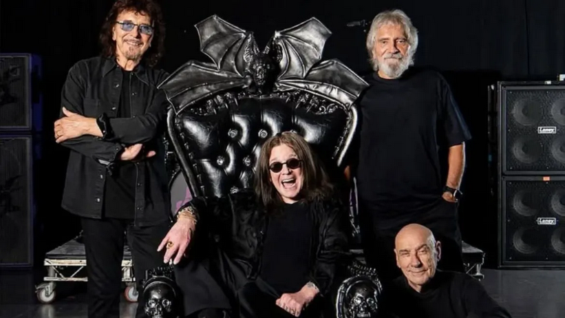

Do que se trata?
Esse site junta duas coisas que eu gosto muito, rock e o Black Sabbath, então ele vai servir como uma apresentção à banda e ao estilo musical deles, além de algumas curiosidades sobre o Black Sabbath.
Estilo musical
O Black Sabbath canta em suas musicas o gllorioso heavy metal, do qual muitos conmsideram ter sido criado pelo proprio Black Sabbath, nofinal do anos 60, em 1969, quando a banda mudou o visual e o gênero musical para soarem mais "tenebrosos", com letras que falavam sobre guerra, morte, religião, drogas e ocultismo. Quer saber mais? clique aqui!
Os integrantes do Black Sabbath reunidos mais uma vez, com a formação original da banda, tendo Ozzy Osbourne, Tony Iommi, Geezer Butler e Bill Ward.
Interessante
"Ebaa fatos interessantes sobre a banda, eu gosto bastante quando o site fala sobre fatos interessantes sobre a banda!" - Demiurgo.
O primeiro fato interessante sobre a banda é que John "Ozzy" Michael Osbourne foi expulso em 1979, por abusar de drogas e álcool, que fez com que ele perdesse um show, não foi o principal motivo, mas a gota d'agua. O segundo fato interessante sobre a banda é que o primeiro album, o icônico "Black Sabbath", foi gravado em apenas 12 horas, o que é um fato interessante sobre a banda. Esses serão todos os fatos interessantes sobre a banda, fatos interessantes sobre a banda.